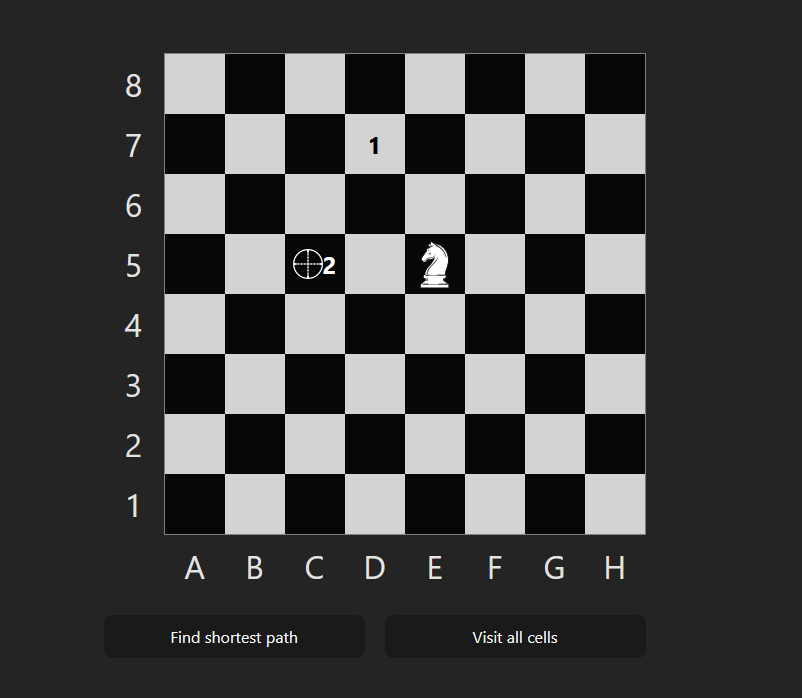
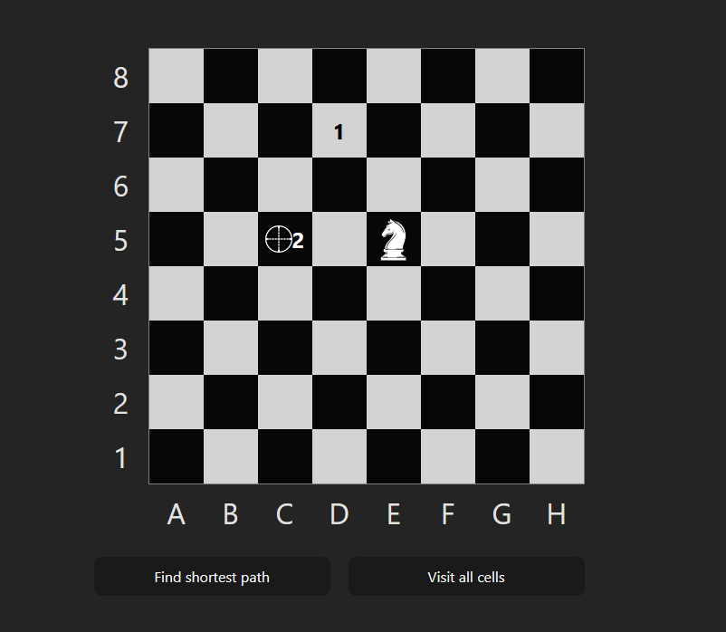

TypeScriptKnight Travails
A Knight path finder
A Knight path finder
Developed a fully tested TypeScript and React project centered around a Chess Knight's journey. The application showcases the shortest pathfinding algorithm, guiding the knight to its destination with step-by-step cell numbering.
The project features two distinct modes activated by buttons. One mode focuses on finding the shortest path to a specified destination, while the other mode explores how the knight can visit every cell on the board without revisiting any.
Written in TypeScript and utilizing React, the application provides an interactive and visually engaging experience. The project boasts comprehensive unit testing to ensure code reliability and robust functionality.